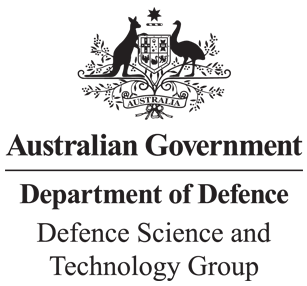
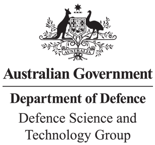

Hi, I'm Arthur Sze.

I'm a Software Engineer.

I solve problems.

And I'm always learning.


 



My Thesis was presented as an e-poster at the IEEE EMB 2022 Conference in Glasgow, Scotland. This would not have been possible without the continued guidance and mentorship provided by my supervisors Beena Ahmed and Mostafa Shahin. Please feel free to download a 4-page summary here.
Abstract: In this paper we propose a novel deep learning based, end-to-end approach for patient-level insomnia classification with two distinct model architectures based off one-dimensional (1D) and two-dimensional (2D) versions of the computer vision Convolutional Neural Network (CNN), AlexNet. We achieved up to 94.4% and 88.9% patient-level classification accuracy via our 1D and 2D models respectively. Clinical Relevance— Clinical diagnosis of insomnia is traditionally a time-consuming process. The proposed work could be coupled with existing wearable technology to deliver patients with a quick a pathway to an insomnia diagnosis.

© 2022 Arthur Sze.